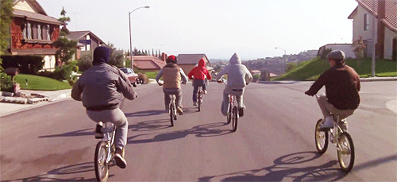
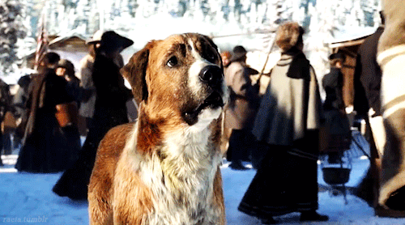

Real Men Don't Cry??
Is that so? I obviously beg to differ. I do believe that God literally gave us emotions,
as human attributes, and we all express them differently.
However, I do not believe that we are to be led by our emotions. Our feelings
should be driven by that which is true, we should not be driven by our feelings.
The book of Proverbs talks about this a lot. But this is not a dissertation on emotions.
This is a brief overview of several films that have caused me to respond in an emotional way.
Be prepared to laugh.

This sci-fi/family/coming of age movie is wonderful in it's own right, and has been
solidified as one of the greatest films of all time. Not that this means much, but worldwide, E.T. has
grossed nearly 80 times it's budget of $10.5 million. So, my response to this film was two-fold.
I had seen the movie several times, but around 2013, I plopped down on a
lazy afternoon and tuned in. What gave me that wave of emotion, was the scene where
E.T. was languishing in the isolation chamber, and Elliott was watching the chrysanthemum flower as the
indicator of his health.
When things went south, so did my tears.
The next time E.T. got the waterworks from me was in 2019. I was in the hospital with
my just-born daughter. Everyone was sleeping, so I tuned in again. Only this time, it was an
entirely different scene. Now it was the scene where E.T., Elliot, his older brother Michael
and friends, were running from law enforcement in a high-speed chase to get E.T. back to the forest.
This was even before the infamous bicycle-flight scene. I mean, this is when they were cutting
across
backyards, jumping dunes, swerving and evading their pursuers. The score (written by Jedi master
John Williams), the cinemetography, the exhiliration, and their noble cause got to me. I thought to
myself simply, "Man, they are really friends!" Risking their freedom, possibly even their lives, to help get
E.T. home. I was instantly reminded of Jesus' own words to his followers in John 15:13, "Greater love has no
one
than this (love), that someone lay down his life for his friends." Obviously a much different
context,
as Jesus was speaking of his own death for the sins of the world,
but this scene resonated with me in a profound way.

This blockbuster rolled onto the scene large and in charge, with a budget and cast to
boot.
I was in college when this film came out, and I remember my classmates talking about the ridiculous amount
of processing power it took render it's detailed, computer-generated sequences. It may be exaggerated, but
it was said to have taken 38 hours to render a single frame of movement. That's not even one second of
screen time.
Yes, I know this movie seems out of place on this kind of list, but hear me out. The scene on the table
is where Sam, Mikaela and their new Autobot friends are confronted by the mysterious Sector 7 after a short
chase. Towards the end of this sequence, Bumblebee is shown being captured in a net and sprayed with a
cryo-weapon to freeze him, while Sam screams at the soldiers to stop. In a burst of protective anger,
Sam breaks free from the soldiers holding him and sprints towards the man freezing Bumblebee and
levels him, then struggles to take the cryo-weapon away from him, before he is subdued again.
Surprisigly, the tears swelled on me for this one. I will admit the orchestral crescendo got to me, and this
time it was composer Steve Jablonsky, who crafted the ambience for the film series. But it was also the
connection Sam and Bumblebee had formed in their short time together. Sam was so devoted to his friend, that
he was willing to fight off soldiers for him. As Bernie Mac's character, Bobby Bolivia, stated earlier
in the film, "there's a mystical bond between man and machine."

Now, this one caught me completely off guard. I mean, I literally thought the
movie would be a trite,
derivative of every "man-of-the-woods" film ever made, but boy, was I wrong. I know this film is
relatively new, so I wont go into detail, for those who haven't seen it yet (like my wife).
Rather than focus on Harrison Ford's character, John, the film centered around Buck, a large, stubborn, St
Bernard mix.
After a series of events, Buck ends up being sold to a man who works a mail route along the Yukon with
a dog sled team. Perrault, the owner of the team is also notoriously late delivering the mail to the
postmaster.
When Buck assumes lead dog position, Perrault is able to deliver the mail in record time.
Ok, I'm getting to it.
While the postmaster is distributing the letters and parcels, and Perrault is off to the side with Buck, he
references something he said to Buck earlier in the film. He said, "You see, Buck? We don't just carry the
mail,
we carry lives." The scene shows Buck surveying the crowd, as the townspeople were all gathered around,
opening and reading their various letters and documents. Some had good news, others had not so good news.
Some laughing and smiling while reading, others crying. Something about this scene struck me. From the way
technology has advanced to the point that we can easily take for granted the ease of texts and emails, to
the way many of the people of that day had to wait weeks and months to hear from loved ones, or conduct
business. That statement also showed me that Perrault took his work seriously, and was not flippant about
his vocation, which also resonated with me. All I know is one minute I was eating popcorn, the next minute
I was wiping my eyes with my butter-stained napkin.

Wow. Just wow. What a film! People can say what they want about the
"incessant singing", but I definitely enjoyed it. This film has an abundance of sad/emotional
scenes, but what struck me the most was the scene where Valjean after being recently freed
from 20 years of prison labor for stealing a loaf of bread, is wandering the streets and is
taken in by Bishop Myriel. The bishop fed him and gave him a bed for the night, while Valjean
eyes the expensive silver dishes that the sisters are
putting away after supper. Being human, and naturally selfish, Valjean steals the silver and
leaves early morning. He is caught and brought back to the Bishop's home, and the constable
says Valjean alleges the Bishop gave him the silver. Bishop Myriel says he did, and says
Valjean forgot to take the best pieces, two ornate silver candle holders. This is a pivotal
scene in the film, as it marks the start of Valjean's "repentance", or turning away from
wrong-doing, to that which is righteous. The following scene portrays Valjean in bittersweet turmoil
as he laments under the weight of the grace he has recieved from the Bishop, who says he
"saved Valjean's soul for God". The Bible says "mercy is better than judgement". That is what we see
as this story progresses, and Valjean begins a new journey, living for God and helping others. So
much more to be said, but every time I see this film, I'm on the edge of bawling the whole time.
Yes, it's true.